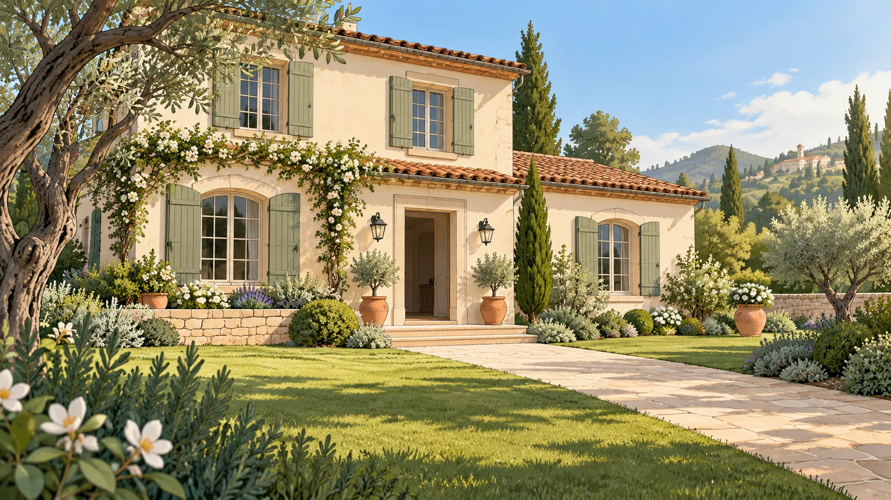

Una giornata smart · Clip 02
Pronti, si esce.
La coppia si avvia verso una nuova giornata. La porta si chiude e la casa attiva la protezione, da sola.


La giornata continua08:30La casa pensa al resto.
Uscita di casa
Casa protetta.Antifurto inserito automaticamente
LEILeiPronti, andiamo!
Una giornata smartVoi uscite. La casa si protegge.
00:0000:19
02 / 08 · Uscita e antifurto